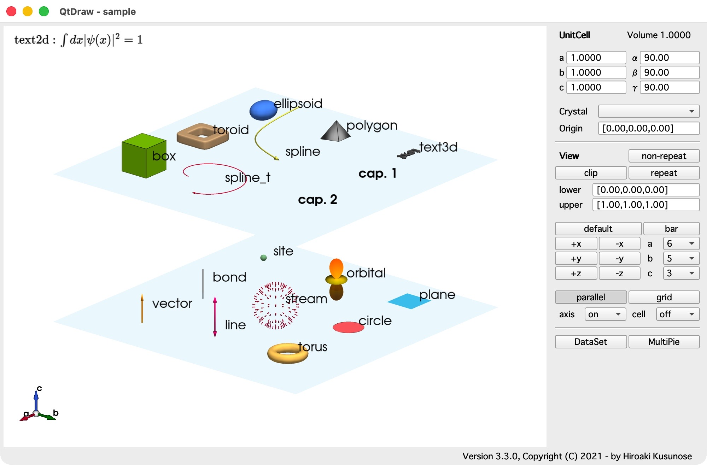
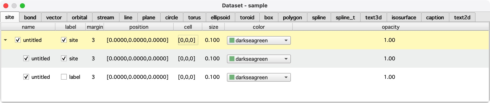
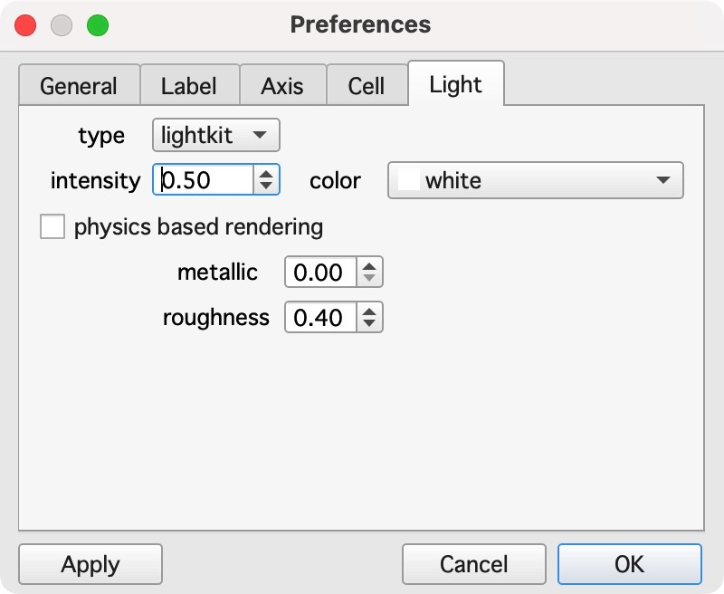

はじめに#
英語版はこちらです。
メインウィンドウ#
QtDraw のメインウィンドウは次のとおりで、メインパネルとコントロールパネルがあります。

ウィンドウ下部の欄には、左側に短いメッセージが数秒間表示されます（例：ファイルの保存、描けなかったオブジェクト、undo、MultiPie の群、warning）。右側にはバージョンが表示されます。メッセージは Info ウィンドウにも、warning と error は Log ウィンドウにも残ります（Window メニュー）。
オブジェクトの作成と編集#
これらのオブジェクトを描くには、e キーか右のパネルの DataSet ボタンを押します。すると、次のように DataSet ウィンドウが表示されます。

DataSet ウィンドウでは、タブでオブジェクトの種類を選び、各タブで右クリックのコンテキストメニューからオブジェクトを挿入、コピー、削除できます。最も簡単なのは、まずデフォルト値でオブジェクトを作り、そのあと自由に編集する方法です。
メインパネルでオブジェクトを右クリックするとコンテキストメニューが表示され、そのオブジェクトを削除、非表示にしたり、開いたりできます。
マウスとキー#
メニューバーの Help > Mouse and Keys にも同じまとめが表示されます。
メインパネルでは：
左ドラッグ：回転。Shift + 左ドラッグ：移動。ホイールまたは右ドラッグ：ズーム。
オブジェクトの上で（ドラッグせずに）右クリック：そのオブジェクトを
DataSetウィンドウで開く、非表示にする、削除するためのコンテキストメニュー。e：DataSetウィンドウを開きます。
DataSet ウィンドウでは：
右クリック：オブジェクトを挿入、コピー、削除するためのコンテキストメニュー。
Shift または Ctrl（macOS では Cmd）+ クリック：複数の行を選びます。
Delete（macOS ではBackspaceも）：選んだ行を削除します。Esc：選択を解除します。Up、Down：選択を移動します。
File メニューでは、ファイルを開く (Ctrl+O、macOS では Cmd+O)、最近の 10 個のファイルの一つを開き直す (Open Recent)、保存する (Ctrl+S、Cmd+S)、別の名前で保存する (Save As、Ctrl+Shift+S、Cmd+Shift+S)、スクリーンショットを保存する、図を Python コードとして書き出す (Export as Python)、終了する (Ctrl+Q、Cmd+Q) ことができます。Save は最後に開いたか保存したファイルに書き出します。初めて保存するときや、CIF、VESTA、XSF のファイルを読み込んだあとは、ファイル名を尋ねます。保存していない変更があるままウィンドウを閉じると、QtDraw は保存するかどうかを尋ねます。変更がなければ、すぐに閉じます。
Edit メニューでは、オブジェクト、単位胞、範囲、MultiPie の群の変更を元に戻す (Ctrl+Z、macOS では Cmd+Z)、やり直す（プラットフォームによって Ctrl+Y または Ctrl+Shift+Z、macOS では Cmd+Shift+Z）ことができます。カメラ、表示の設定、環境設定は、元に戻す・やり直すの対象になりません。ファイルを開くと新しい履歴が始まり、保存しても履歴は保たれます。Clear は確認なしにすべてのオブジェクトを削除しますが、元に戻すことができます。DataSet は（e キーと同じく）すべてのオブジェクトの表を開き、Preferences は環境設定を開きます（macOS ではアプリケーションメニューにあります）。
View メニューでは、パネルと同じように、視点の方向を設定し（+x、+y、+z、-x、-y、-z に Ctrl+1 から Ctrl+6、デフォルトに Ctrl+0。macOS では Cmd）、平行投影、グリッド、スカラーバー、クリップ、繰り返しを切り替え、繰り返しなしに変換し、軸と単位胞の表示を選びます。
Window メニューは、QtDraw のメッセージ (Info) と、warning と error を時刻付きで記録したログ (Log。warning では自動で開かないので、思いどおりに描かれないときに確認してください)、そして描画を確認するための内部データ（カメラ、すべてのオブジェクトの生データ、アクターの名前、状態、環境設定。Camera、Data、Actor、Status、Preference）を表示します。
Help メニューは、マウスとキーの操作を表示し、このドキュメントと問題を報告するためのページを開き、バージョンの情報を表示します。
単位胞と表示の設定の下にある DataSet ボタンと MultiPie ボタンは、DataSet ウィンドウと MultiPie のダイアログを開きます。MultiPie がない場合は、MultiPie ボタンから pip でインストールできます（出力は Log ウィンドウに表示されます）。それが失敗した場合は、手でインストールするためのコマンドを表示します。MultiPie を使った描画は、MultiPie がインストールされているときだけ開けます。環境設定は Edit > Preferences に、バージョンの情報は Help > About QtDraw にあります（macOS ではどちらもアプリケーションメニューにあります）。
エラーが起きると、短いメッセージが表示されます。トレースバックは Show Details... の中とログにあります。問題を報告するときは、それを含めてください。
環境設定#
QtDraw の見た目と使い勝手は、次のように Preferences ダイアログ（Edit > Preferences。macOS ではアプリケーションメニューにあります）で変更できます。


Python のコードからのオブジェクトの作成#
すべてのオブジェクトは、Python のコードや Jupyter Notebook からも描けます。
Jupyter Notebook の例は qtdraw.ipynb にあります。
詳しくは API を参照してください。
この機能を使うと、バックグラウンドでの処理ができます。create_qtdraw_file は、ウィンドウを出さずに図をファイルに書きます。
#
# background_s.py
#
import numpy as np
from qtdraw import create_qtdraw_file
# draw objects by using widget.
def draw(widget):
widget.set_cell("off") # cell off.
# add objects.
for i in range(32):
x = np.cos(i * np.pi / 8)
y = np.sin(i * np.pi / 8)
z = i * 0.05
widget.add_site(position=f"[{x},{y},{z}]", size=0.1)
widget.set_view()
# draw and write file.
create_qtdraw_file(filename="output.qtdw", callback=draw)
ほかの例については、例のページを参照してください。